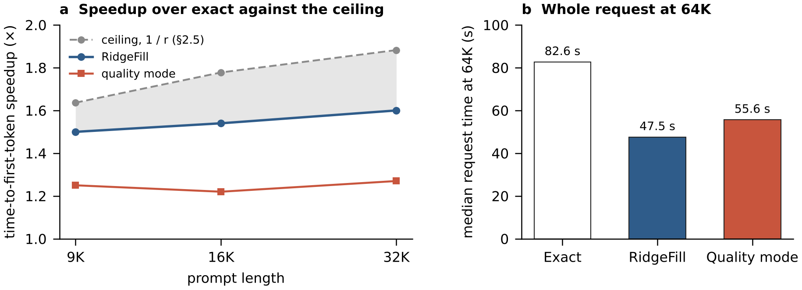
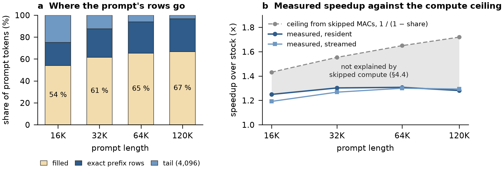
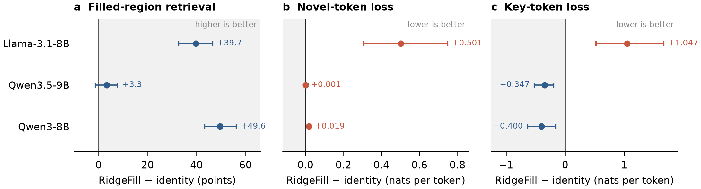
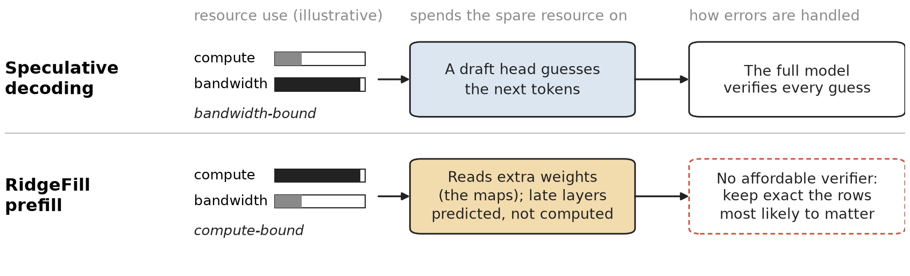
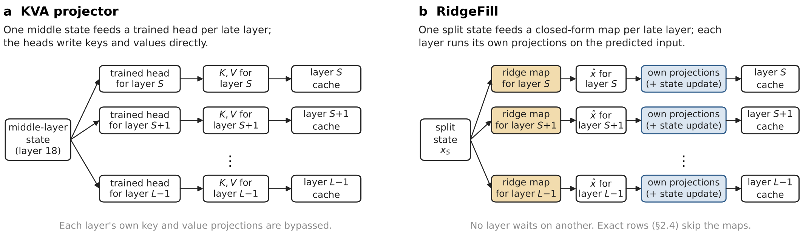

RidgeFill: Training-Free Late-Layer Cache Fill for Faster Prefill
RidgeFill skips most of a model's upper layers during prefill. A ridge regression, fitted once in closed form, predicts each late layer's input from one middle layer, and the layer writes its cache from that prediction. Nothing is trained and no token is dropped.
Every number on this page is from the paper; each one is recomputed from the raw results in the data repository.
Results
Faster prefill, with the cost measured
Two serving deployments on official benchmarks, and a reference study on three 8 to 9B models that compares the fitted map with the identity fill at the same split.
Qwen3.8-Flash-Next in vLLM

| Arm | TTFT 9K | TTFT 16K | TTFT 32K | 64K request |
|---|---|---|---|---|
| Exact | 1.00× | 1.00× | 1.00× | 1.00× (82.6 s) |
| RidgeFill | 1.50× | 1.54× | 1.60× | 1.74× (47.5 s) |
| Quality mode | 1.25× | 1.22× | 1.27× | 1.49× (55.6 s) |
| Arm | Perplexity gap [95 % CI] | RULER, all | RULER, filled region |
|---|---|---|---|
| Exact | n/a | 100.0 | 100.0 |
| RidgeFill | +2.65 % [−0.02 %, +4.93 %] | 99.8 | 99.8 |
| Quality mode | +1.60 % [−0.83 %, +4.32 %] | 99.9 | 99.9 |
Qwen3.8-27B in llama.cpp, one A100

| Prompt tokens | Stock s | Resident s | Speedup | Streamed s | Speedup | VRAM over stock, resident / streamed |
|---|---|---|---|---|---|---|
| 16,384 | 12.97 | 10.38 | 1.249× | 10.88 | 1.192× | +1,592 / +268 MiB |
| 32,768 | 27.49 | 21.11 | 1.302× | 21.69 | 1.267× | +1,802 / +478 MiB |
| 65,536 | 60.50 | 46.28 | 1.307× | 46.55 | 1.300× | +2,270 / +944 MiB |
| 120,000 | 128.10 | 100.01 | 1.281× | 99.06 | 1.293× | +3,014 / +1,732 MiB |
| Benchmark | n | Stock | RidgeFill | Δ points [95 % CI] |
|---|---|---|---|---|
| RULER 16K | 260 | 85.69 | 84.51 | −1.19 [−3.13, +0.79] |
| RULER 32K | 260 | 87.85 | 86.42 | −1.42 [−3.21, +0.35] |
| LongBench v2 | 503 | 38.57 | 37.18 | −1.39 [−4.97, +2.19] |
Reference study: fitted map against the identity fill
The identity fill uses the split layer's state as every late layer's input; at the same split, it is POP's fill. The fitted map retrieves far more from the filled region on the two dense models; at this aggressive split, Llama's loss is worse.

Method
Predict the input, let the layer do the rest
The design follows YOCO and DeepSeek-V4.1-Flash, where the projection is trained into the model. kishida's KVA projector was the first public retrofit, with trained heads. RidgeFill retrofits the idea onto models that were never trained for it.
- Run the lower layers exactly up to a split layer.
- Predict each late layer's input from the split layer's state with a per-layer ridge map, fitted once in closed form from one pass over calibration text.
- Let each late layer write its own cache from that prediction: its own projections run unchanged, and on a Gated DeltaNet layer so does its state update.
- Keep exact what matters most: a chosen set of rows, the last few thousand tokens, and every decoding step run the full model.



Limits
What it does not do
RidgeFill shortens prefill. Every decoding step runs the full model.
On the 27B, RULER changes by −1.2 and −1.4 points and LongBench v2 by −1.4; the intervals do not rule out losses of a few points.
Llama-3.1-8B gets worse at shallow splits, the rows that help two models hurt the third, and common-word extraction drops 10 to 14 points on the 27B.
The maps are fitted once per model in closed form. Maps for five models are public.
Code, data and maps
Run it, check it
| Model | Repository |
|---|---|
| Qwen3.8-27B | RidgeFill-Projector-Qwen3.8-27B-i8 |
| Qwen3.8-Flash-Next | RidgeFill-Projector-Qwen3.8-Flash-Next-i8 |
| Llama-3.1-8B-Instruct | Llama-3.1-8B-Instruct-RidgeFill-Projector |
| Qwen3-8B | RidgeFill-Projector-Qwen3-8B |
| Qwen3.5-9B | RidgeFill-Projector-Qwen3.5-9B |
Abstract
RidgeFill shortens prefill by not computing most of a model's upper layers for the prompt. The lower layers run exactly up to a split; from the split layer's state a per-layer map predicts every later layer's input, and each late layer writes its cache from that prediction. The design follows YOCO and DeepSeek-V4.1-Flash, where the projection is trained into the model. RidgeFill retrofits it onto models that were never trained for it: the map is a ridge regression fitted once in closed form from one pass over calibration text, the layer's own projections run unchanged, and a chosen set of rows, the last few thousand tokens, and every decoding step run the full model. Nothing is trained and no token is dropped.
Most of the work was in measurement, finding a repeatable methodology. Loss averaged over all tokens hides RidgeFill's error. Needle retrieval in the filled region, loss on tokens that depend on distant context, and splice tests that swap filled keys or values for exact ones show which component carries it: the keys on Llama-3.1-8B, half of it in their scale, and the values and the recurrent state on Qwen3.5-9B.
On Qwen3.8-27B in a llama.cpp fork on an A100, time to first token is 1.25 to 1.31× faster at 16K to 120K tokens with the maps in VRAM; RULER changes by −1.2 and −1.4 points and LongBench v2 by −1.4; the 95 % intervals include zero but do not rule out losses of a few points. On Qwen3.8-Flash-Next in vLLM it is 1.50 to 1.60× faster than exact at 9K to 32K tokens, with RULER's needle tasks at 99.8 against 100.0 and perplexity on novel tokens 2.65 % higher [−0.02 %, +4.93 %]. On three 8 to 9B reference models, at the same split and tail as the identity fill, the fitted map retrieves 49.1 and 49.6 more filled-region RULER points on the two dense models (at that split Llama's loss is worse), and its long-document loss is within 0.03 nats of the released SwiftKV checkpoint's.
Cite
BibTeX
@misc{johnston2026ridgefill,
author = {Johnston, Dylan and Smith, Robert P},
title = {{RidgeFill}: Training-Free Late-Layer Cache Fill for Faster Prefill},
year = {2026},
publisher = {Zenodo},
note = {Preprint},
doi = {10.5281/zenodo.23890247},
url = {https://doi.org/10.5281/zenodo.23890247}
}